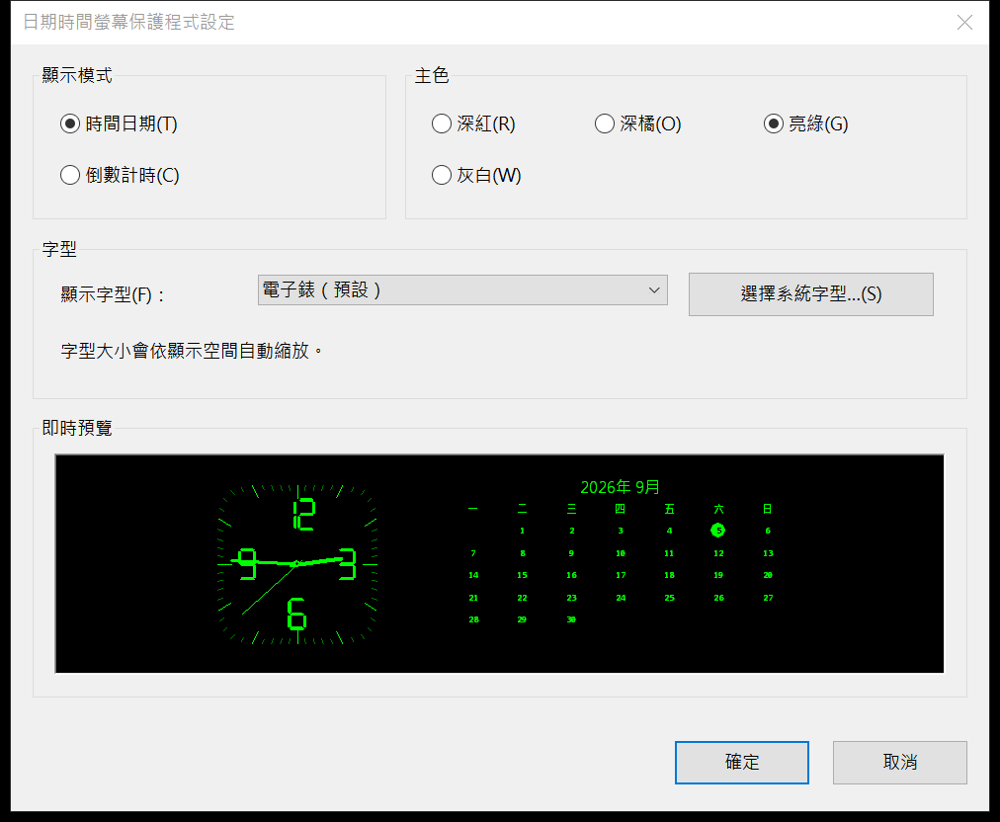

01
時間日期
圓角方形刻度鐘、連續指針、星期一為首欄的六列月曆，以及清楚的今天標示。
Windows x64 · v0.1.0
原生 Win32/GDI 螢幕保護程式，結合指針鐘、六列月曆與七段倒數。 不需要網路、遙測、外部字型或額外 Runtime。
Windows 10 x64 的建置、原生功能與非互動 smoke test 已通過。 需要 UAC 的完整安裝矩陣未在遠端工作階段執行，Windows 11 也尚未驗證。 下載後請先核對 SHA-256；Windows 可能顯示未驗證發行者或 SmartScreen 提示。
DISPLAY MODES
01
圓角方形刻度鐘、連續指針、星期一為首欄的六列月曆，以及清楚的今天標示。

02
六位七段數字搭配沙漏與進度線，最後十秒顯示警示，歸零後以四次閃爍完成。
支援多螢幕、負座標、每螢幕 DPI、橫直版與極小預覽。
深紅、深橘、亮綠、灰白，以及三種內建選項與自訂系統字型。
支援 /s、/p HWND 與 /c；設定對話框和預覽均使用原生 Win32。
DOWNLOAD
選擇安裝程式，或直接取得獨立 .scr 與校驗清單。
INSTALL
下載 Setup 與 SHA256SUMS.txt，以 PowerShell 的 Get-FileHash 核對 SHA-256。
Setup 需要系統管理員權限，並將唯一的 .scr 安裝到 64 位元 System32。
在 Windows 螢幕保護程式設定選取本程式，再調整模式、顏色、字型與等待時間。

按下「確定」才寫入目前使用者的設定；取消、Esc 或關閉視窗都不提交變更。
COMPATIBILITY
22H2 build 19045 的建置、原生功能與非互動驗證。
遠端測試刻意不顯示 UAC，也不寫入 System32。
目前沒有 Windows 11 開發環境，保留為後續相容性驗證。
OPEN SOURCE
Rust 1.97.1、Win32/GDI、Inno Setup 6.7.3。遠端 CI 只執行不顯示 UI、不安裝、不觸發 UAC 的測試路徑。